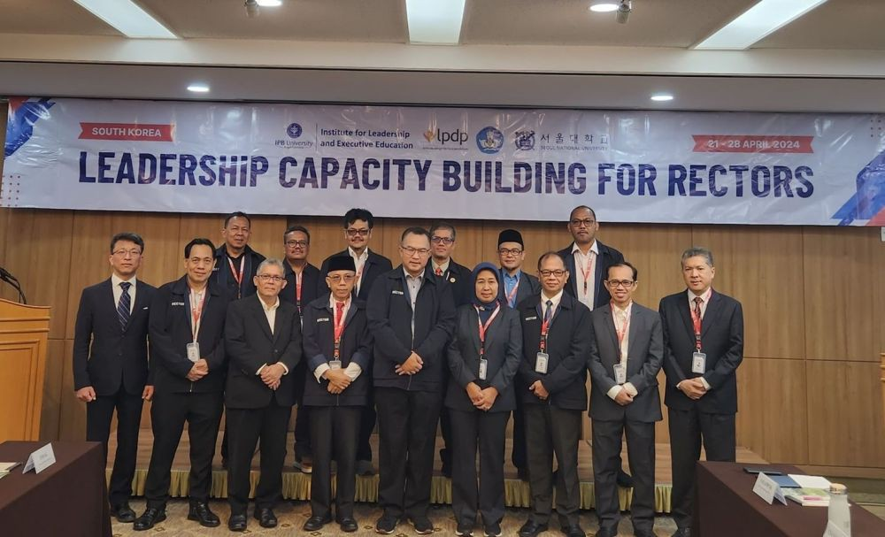

.png)

Kerjasama: Indonesia Tiongkok Tingkatkan Kualitas Pendidikan Vokasi (Program pendidikan pada jenjang pendidikan tinggi yang bertujuan untuk meningkatkan kualitas SDM dalam keahlian dan keterampilan dalam bidangnya) 22 Agustus 2023
Tujuan: Meningkatkan hubungan kerjasama Indonesia dengan Tiongkok di bidang pendidikan vokasi
Kasus: Pendidikan vokasi berkaitan erat dengan pembangunan ekonomi dan sosial dimana keberadaan pendidikan vokasi ini sangat penting untuk mempromosikan lapangan kerja dan kewirausahaan sehingga dapat menimbulkan pembangunan ekonomi, sosial, dan kesejahteraan dalam masyarakat. Fokus utama dari reformasi ini adalah revitalisasi pendidikan vokasi dan pelatihan vokasi. Sebagai langkah nyata dalam mempercepat revitalisasi pendidikan vokasi, dibutuhkan jalinan kerja sama dengan banyak pihak dan salah satunya adalah kerjasamanya dengan Tiongkok. Saat ini, sudah ada 9 politeknik negeri di Indonesia yang menjalin kerja sama dengan universitas dan perguruan tinggi vokasi di Tiongkok melalui skema university to university (U to U). U to U ini memiliki peran penting dalam diplomasi budaya dan pendidikan yang bertujuan untuk membangun SDM yang lebih unggul dan berkualitas. Sejak tahun 2009-2022 melalui China Language Education and Cooperation (CLEC), kementerian pendidikan Tiongkok telah memberikan lebih dari 2.500 beasiswa kepada pengajar bahasa Mandarin di Indonesia.